GitHub Actions
CI/CD的工具
当我们提交代码的时候,可以触发流水线.
我们的目的是自动构建 gitbook build,并将编译好的代码静态页面提交到个人仓库中,
并自动更新到github pages.
配置secrets
创建token
- 在个人中心配置需要的token 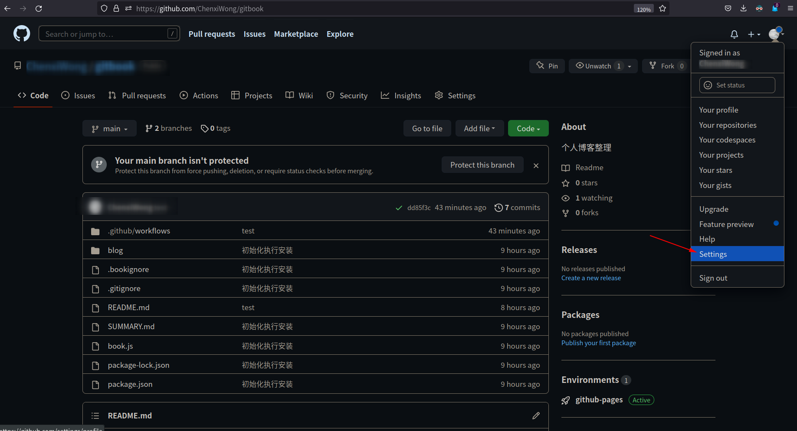 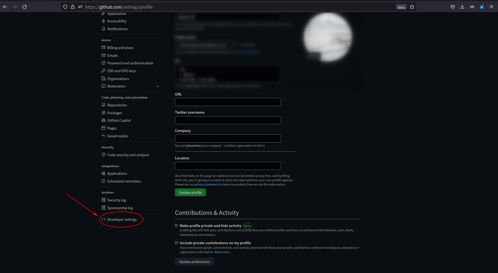 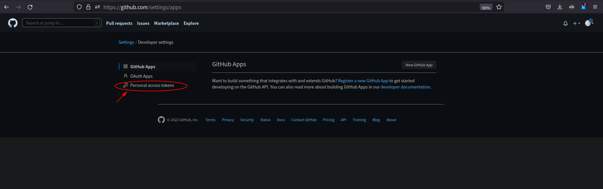 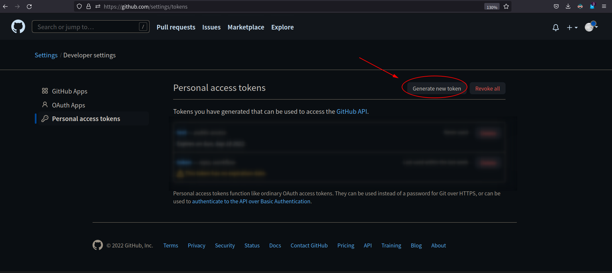
- 根据需求填写对应的信息、重点关注workflow权限 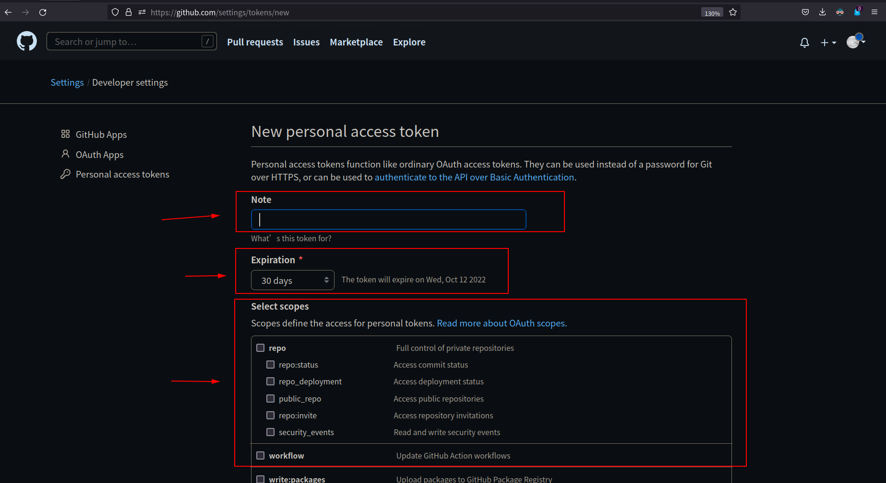
- 填写完成创建token 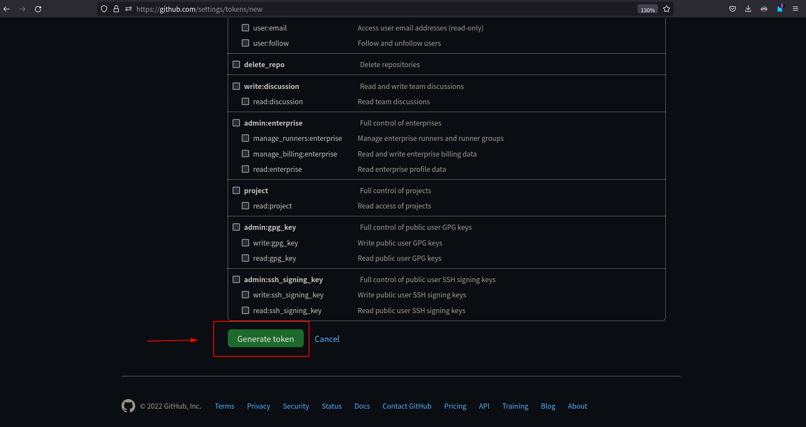
- 复制对应的token字符串 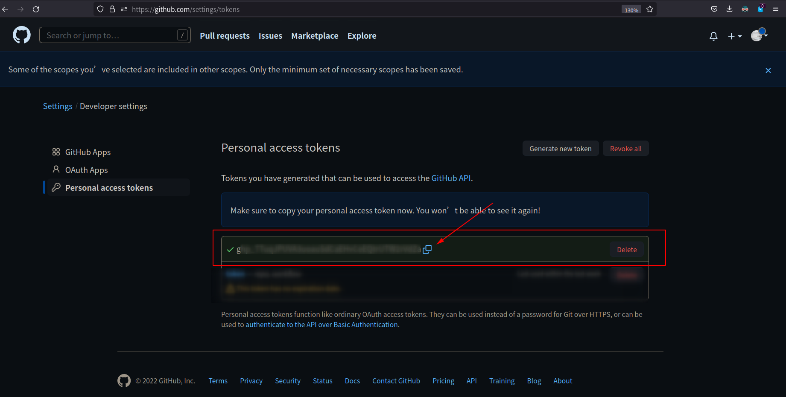
- 将token字符串填写到项目token中 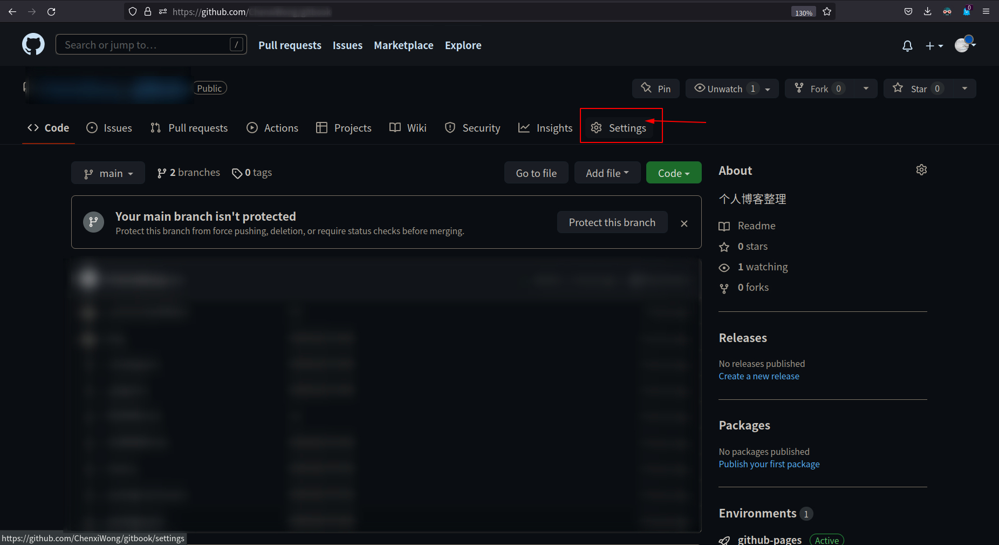 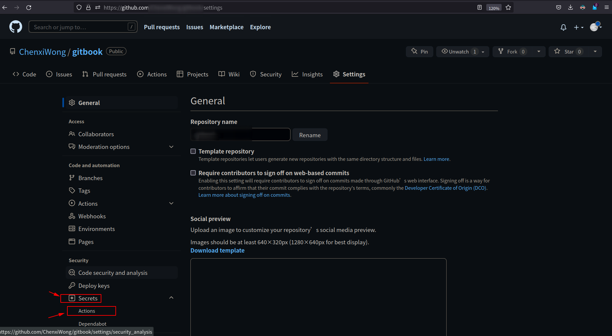 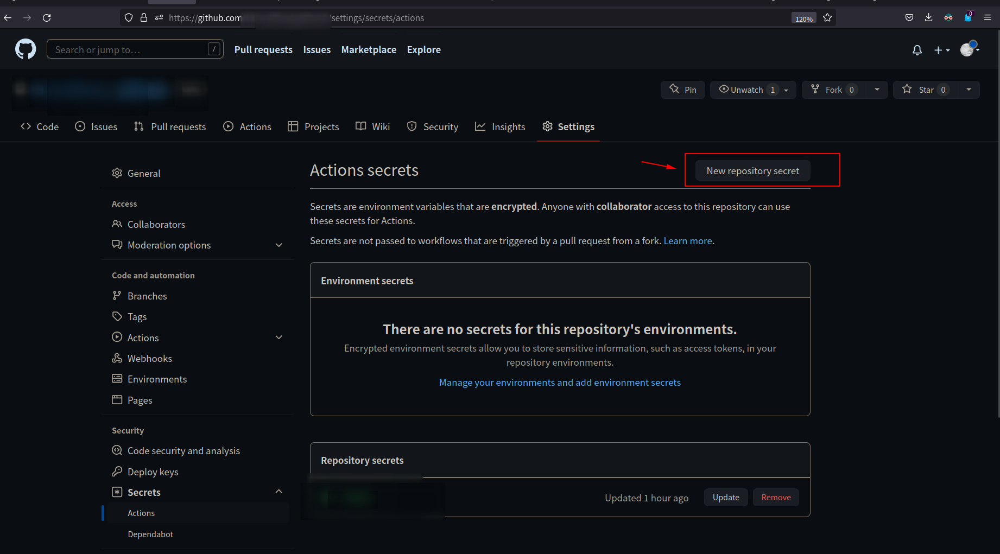
- 填写copy的token字符串提交，即可创建完成 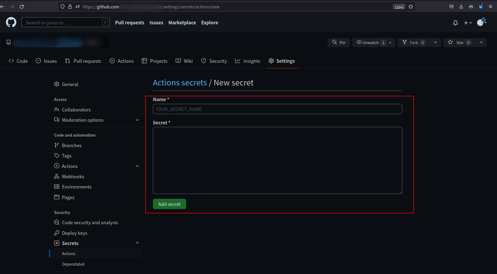
- 注意最后一步的token name，就是workflow中的使用名称
CI脚本
工作流程在 .github/workflows 目录中定义,此目录下所有yml文件都会被执行.
.github/workflows/ci.yml 如我们的文件编辑如下
当我们推送代码,触发Actions时
- 切换到主分支main
- 安装node.js 因为我们的gitbook依赖
- 安装gitbook
- 安装gitbook服务需要的各种插件
- 执行git build,生成_book目录
- 将_book目录内容,推送到仓库的gh-pages分支
做完以上步骤,github pages也会触发一个流水线,将
gh-pages内容更新.
name: auto-generate-gitbook
on: #在main分支上进行push时触发
push:
branches:
- main
jobs:
main-to-gh-pages:
runs-on: ubuntu-latest
steps:
- name: checkout main
uses: actions/checkout@v2
with:
ref: main
- name: install nodejs
uses: actions/setup-node@v1
- name: configue gitbook
run: |
npm install -g gitbook-cli
npm install gitbook-plugin-search-pro
npm install gitbook-plugin-chapter-fold
npm install gitbook-plugin-sitemap
npm install gitbook-plugin-theme-lou
npm install gitbook-plugin-back-to-top-button
npm install gitbook-plugin-code
npm install gitbook-plugin-prism
- name: generate _book folder
run: |
gitbook build
cp SUMMARY.md _book
- name: push _book to branch gh-pages
env:
TOKEN: ${{ secrets.TOKEN }}
REF: github.com/${{github.repository}}
MYEMAIL: xxxxxxxxx@qq.com # ！！！ 记得修改为自己github设置的邮箱
MYNAME: ${{github.repository_owner}}
run: |
cd _book
git config --global user.email "${MYEMAIL}"
git config --global user.name "${MYNAME}"
git init
git remote add origin https://${REF}
git add .
git commit -m "Updated By Github Actions With Build ${{github.run_number}} of ${{github.workflow}} For Github Pages"
git branch -M main
git push --force --quiet "https://${TOKEN}@${REF}" main:gh-pages